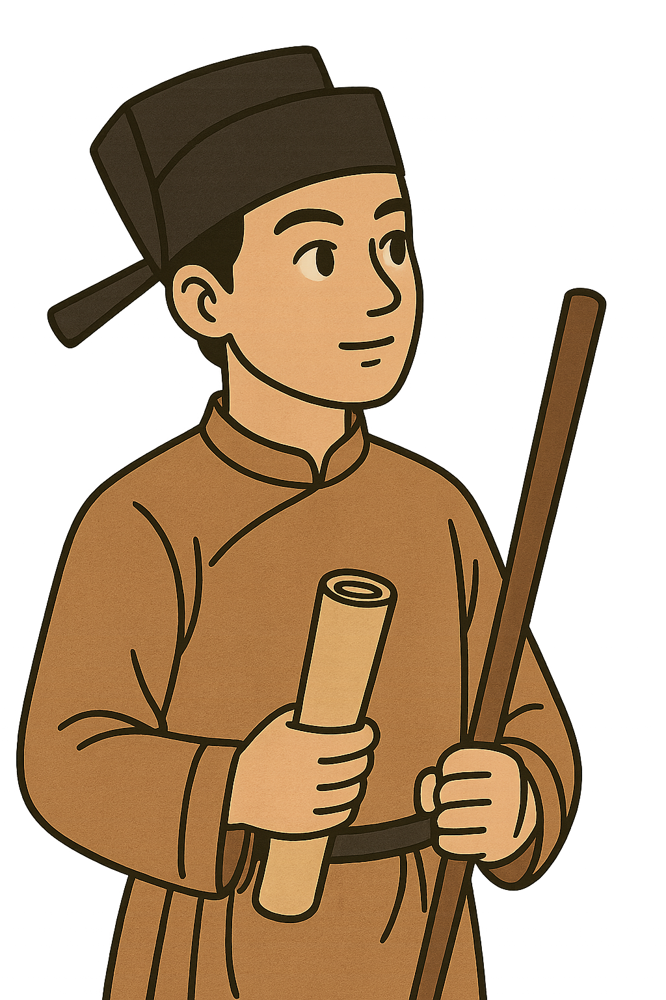

<nav class="track">
    <div class="container top-nav-content">
        <ul class="top-nav-links">
            <li><a href="#hero">Giới thiệu</a></li>
            <li><a href="#summer-activities">Hoạt động</a></li>
            <li><a href="#objectives">Mục tiêu</a></li>
            <li><a href="#vision-mission">Tầm nhìn & Sứ mệnh</a></li>
            <li><a href="#btec-edexcel">Bằng cấp</a></li>
            <li><a href="#contact">Liên hệ</a></li>
        </ul>
    </div>
    
    
    <div class="duong-co"></div>
</nav>

<style>
    /* Top Navigation Bar & Track - New Structure */
    .track {
        position: fixed;
        top: 0;
        left: 0;
        width: 100%;
        z-index: 1100;
        height: 80px;
        background: #fff;
        overflow: hidden;
        box-shadow: 0 2px 4px rgba(0, 0, 0, 0.1);
    }

    .top-nav-content {
        position: relative;
        z-index: 3;
        display: flex;
        justify-content: space-between;
        align-items: center;
        height: 60px;
    }

    .top-nav-links {
        list-style: none;
        display: flex;
        justify-content: space-between;
        align-items: center;
        flex-grow: 1;
        margin: 0 40px;
        padding: 0;
    }

    .top-nav-links a {
        text-decoration: none;
        color: #fff;
        font-weight: 600;
        font-size: 1.1rem;
        padding: 10px 15px;
        border-radius: 8px;
        transition: color 0.2s, background-color 0.2s;
        text-shadow: 0 1px 3px rgba(0, 0, 0, 0.6);
    }

    .top-nav-links a:hover {
        color: #fff;
        background-color: #0056b3;
    }

    .duong-co {
        position: absolute;
        inset: 0;
        background-image: url("img/ChatGPT_Image_22_33_29_8_thg_7__2025-removebg-preview.png");
        background-repeat: repeat-x;
        background-size: auto 80px;
        background-position: bottom left;
        z-index: 1;
    }

    .walker {
        position: absolute;
        bottom: 5px;
        width: 40px;
        transition: transform 0.1s linear;
        z-index: 2;
    }

    .cai-cong {
        width: 50px;
        height: 50px;
        position: absolute;
        bottom: 5px;
        right: 20px;
        transition: transform 0.1s linear;
        z-index: 2;
    }
</style>

<script>
    // thanh di chuyen
    const walker = document.querySelector(".walker");
    window.addEventListener("scroll", () => {
        const scrollTop = window.scrollY;
        const docHeight = document.documentElement.scrollHeight - window.innerHeight;
        const scrollPercent = scrollTop / docHeight;
        const trackWidth = document.querySelector(".track").offsetWidth;

        // Di chuyển nhân vật
        if (walker) {
            walker.style.transform = `translateX(${scrollPercent * trackWidth}px)`;
        }

        // Phân vùng: 4 phần = 25% mỗi phần
        if (scrollPercent < 0.25) {
            console.log("Phần 1: bắt đầu");
        } else if (scrollPercent < 0.5) {
            console.log("Phần 2: đi được 1/4");
        } else if (scrollPercent < 0.75) {
            console.log("Phần 3: gần đến nơi");
        } else {
            console.log("Phần 4: sắp tới cổng!");
        }
    });
</script>